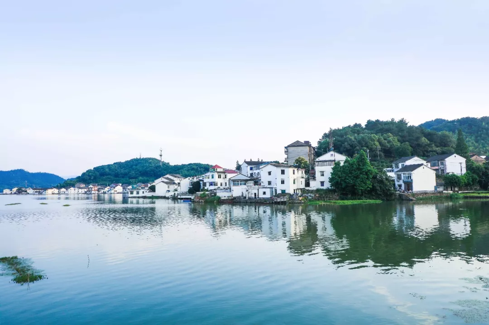
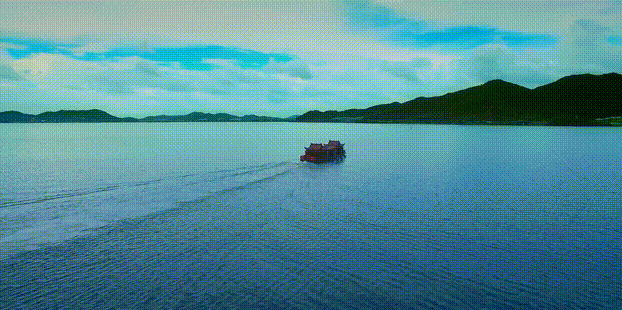
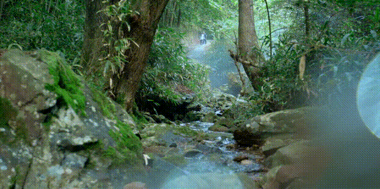

> 东钱湖
城市边的世外桃源。
有一种生活叫东钱湖
逶迤绮丽、连绵不绝的青山群抱中
有一颗璀璨的明珠
千百年来闪耀着诱人的光芒
她有一个令人心动的名字
——东钱湖
被郭沫若先生誉为“西湖风光，太湖气魄”的东钱湖,多山多水，原生态资源丰富。自古以来便是浙东著名风景胜地。东钱湖镇因区域内有东钱湖而得名距中心城区约10公里，是一片生活悠然的乐土。这处宛如桃源般的胜地，还有许许多多的人，只闻其名，不知其美。
在这样阳光熏得游人醉的日子里，我们正好来说一说她。与你共道钱湖美。
东钱湖又名“万金湖”，无论“钱湖”还是“金湖”，其厚重悠远的历史文化蕴含形成了独特文化传承，又与秀美的自然资源相互交融、相映生辉的特色。
区域内自然资源丰富，山地森林覆盖率高达92.4%，目之所及不是湖水蓝便是青山绿，怡人心神。如果你来到东钱湖，我会带你去转转，想必亲身体验过钱湖美，你便再也不想回去。
如果你来到东钱湖
我会带你骑车环游东钱湖
开阔的湖面，曲折的岸线
四周群山环抱，森林苍郁
迎面吹来的风带着自由惬意的味道
如果你来到东钱湖
我会带你泛舟东钱湖
时光与流水晕染出一方宁静淡泊的世界
放空脑袋，静听流水
看时间缓缓流逝也是幸福
福泉山上除了绿意沁人的阡陌茶园，天气变化也是十分丰富。有乡谚说：“晴天遍地雾，雨天满山雾”,可以一观茶园水雾的美景
如果你来到东钱湖
我会带你逛一逛陶公山
悠久的历史，古老的建筑
神话般的传说，丰富的民俗风情
还有那山水相依的湖滨景致
完美展现财富与爱情这一永恒的主题，如果你来到东钱湖，我会带你畅玩东钱湖国际运动村
现代化的滨湖开放空间
人性化的湖上活动
让你体验东钱湖雀跃潇洒的一面
如果你来到东钱湖,我会带你走一走亭溪岭古道,从吴越穿越回来的时光。历经百年沧桑的古道展现着，过去的繁华与现在的宁谧。如果你来到东钱湖。我会带你去岳鄂王庙，始建于南宋端平年间的庙。距今已有750多年历史景区还开辟了湖摈烧烤基地，湖光山色间的烧烤野趣非常
如果你来到东钱湖，我会带你游览南宋石刻公园，肃穆的石刻记录着难以风蚀的历史记忆，看过了东钱湖石刻群，你会感受到东钱湖的文化魅力。
如果你来到东钱湖，我会带你露营湖边。于万籁无声之际听湖水起伏，感受东钱湖的气象万千，拥有涤荡凡尘之后的纯净心灵，关于东钱湖的故事还有很多。“尽说西湖足胜游，谁信东湖更清幽”这里有湖光山色，有人文底蕴沉淀，还有你想要的岁月静好，诗意的田园生活。清波浩淼，倒映碧空如镜；诗意栖居，原来钱湖胜景。东钱湖是宁波山水相依的城市会客厅，是一抹岁月沧桑过去的历史烟尘，喧嚣于这里沉淀，生活在这里铺展。
有着浙江省最大的天然淡水湖泊——东钱湖和华东地区最大的成片茶园——福泉山，这里温暖湿润、雨量充沛，冬无严寒、夏无酷热。而东钱湖镇的居民，就倚靠着这一片宁静淡泊的湖光山色，过着诗意朴实的栖居生活。